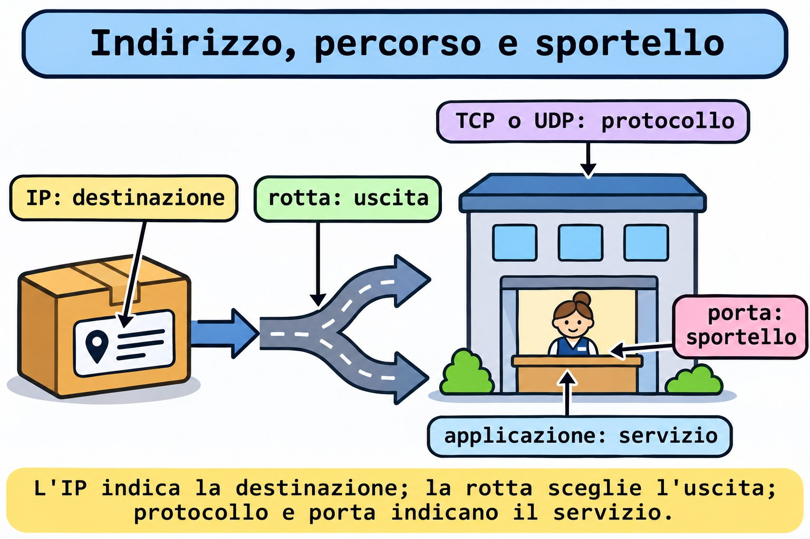
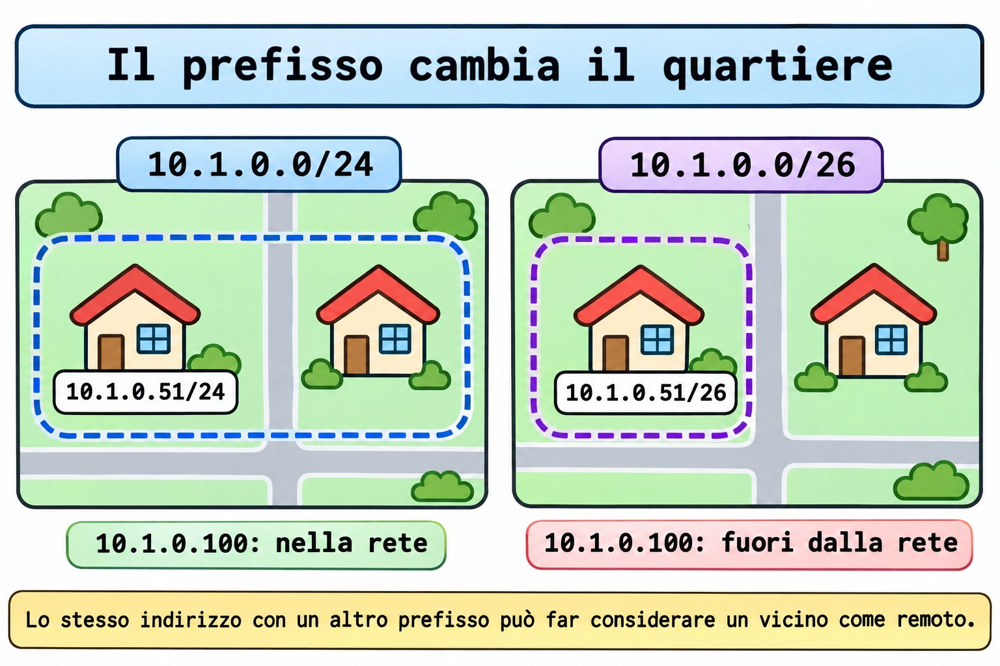

Lezione 11.1 · TCP/IP per chi amministra
In Windows Server, separi indirizzo, maschera, gateway e porta prima di dare la colpa al servizio. In Linux il ragionamento non cambia. Nella Lezione 2.4 hai usato gli strumenti di rete; ora spieghi cosa mostrano. Leggerai IPv4 e IPv6, calcolerai un prefisso e distinguerai ICMP, TCP e UDP con test sulle due VM. La configurazione persistente è per le Lezioni 11.2 e 11.3.
Il cuore di questa lezione: un indirizzo identifica un'interfaccia; un prefisso descrive una rete; la tabella di routing sceglie il percorso; protocollo e porta identificano il servizio. Un
pingche risponde non conferma un servizio. Il resto è approfondimento.
| Scheda | |
|---|---|
| Modulo | M11 · Rete, lezione 1 di 5 |
| Quando | Settimana 16 |
| Alla fine | Spieghi il percorso scelto per una destinazione e dimostri indirizzo, famiglia, protocollo e porta di un servizio |
| Prerequisiti | Lezioni 2.4, 2.5, 3.1 e 10.4; SSH con chiave e sudo sulle due VM |
| Durata | Circa 90 minuti, più 30 minuti per ripetere senza consultare |
| Snapshot | m11a1-inicio e m11a1-fim sulle VM 201 e 202 |
1 · Riscaldamento
Rispondi senza consultare. Le soluzioni sono in fondo.
- Quale comando mostra gli indirizzi delle interfacce senza cambiare la configurazione?
- Un processo è in ascolto solo su
127.0.0.1. Un'altra macchina raggiunge quel servizio tramite l'IP della VM? - Per scoprire chi ha aperto una porta, basta sapere che il servizio è attivo in
systemd?
2 · Perché conta
Il ticket dice: "Il server risponde al ping, ma l'applicazione non si apre". Una persona cambia il gateway. Un'altra riavvia il servizio. La terza apre porte a caso. Tu parti da quattro dati: destinazione, famiglia di indirizzi, protocollo e porta.
| Evidenza | Cosa permette di affermare | Cosa manca ancora |
|---|---|---|
ping riceve risposte | C'è stata una risposta ICMP da quella destinazione | L'applicazione può essere ancora ferma |
ss mostra un socket TCP in LISTEN | Esiste un servizio locale su quell'indirizzo e quella porta | Il percorso remoto e l'applicazione possono fallire |
| Una connessione TCP completa | L'handshake TCP ha funzionato in questo test | Autenticazione e operazione dell'applicazione possono ancora fallire |
| L'applicazione risponde alla richiesta prevista | L'operazione testata ha funzionato | Altre operazioni possono dare un altro risultato |
L'obiettivo è ridurre il dubbio con un test alla volta. Non cambiare una configurazione che l'evidenza non ha ancora indicato.
3 · Modello mentale
Pensa alla consegna di un pacco a un palazzo. L'indirizzo IP indica dove consegnare. La rotta sceglie l'uscita. La porta identifica lo sportello del servizio. Il protocollo definisce come avviene la conversazione. Il prefisso aiuta a descrivere quali indirizzi appartengono alla stessa rete.
aplicação → protocolo + porta → IP de destino → consulta às rotas
|
saída direta ou próximo roteador
destino local: outro processo na própria máquina
destino no enlace: entrega ao vizinho
destino por gateway: entrega ao próximo roteadorLa metafora finisce qui: una porta TCP è un numero di servizio, non una porta fisica della scheda. In Ethernet, la consegna al salto successivo usa un frame e un indirizzo MAC. IPv4 di norma scopre il MAC del vicino con ARP; IPv6 usa Neighbor Discovery. Non devi imparare a memoria questi pacchetti oggi. Devi separare il salto successivo dalla destinazione finale.


Ponte Windows
| Windows Server | Linux | Cosa confrontare |
|---|---|---|
Get-NetIPAddress | ip -br address | Indirizzo e prefisso per interfaccia |
Get-NetRoute | ip route e ip -6 route | Rotte IPv4 e IPv6, separatamente |
Get-NetTCPConnection | ss -tn e ss -ltn | Connessioni e servizi in ascolto TCP |
Get-NetUDPEndpoint | ss -uan | Socket UDP; non c'è l'handshake del TCP |
Test-NetConnection -Port | Client del protocollo, come curl per HTTP | Connettersi alla porta è diverso dal completare l'operazione |
ping -4 e ping -6 | ping -4 e ping -6 | Scegliere la famiglia in modo esplicito |
4 · L'essenziale
IPv4: indirizzo e prefisso sono due informazioni
Un IPv4 ha 32 bit. Il /24 indica quanti bit formano il prefisso. Nell'esempio didattico 10.1.0.51/24, i primi 24 bit identificano 10.1.0.0/24. Equivale alla maschera 255.255.255.0. L'indirizzo resta 10.1.0.51.
| Esempio | Rete | Intervallo della sottorete |
|---|---|---|
10.1.0.51/24 | 10.1.0.0/24 | 10.1.0.0 a 10.1.0.255 |
10.1.0.51/26 | 10.1.0.0/26 | 10.1.0.0 a 10.1.0.63 |
10.1.0.100/26 | 10.1.0.64/26 | 10.1.0.64 a 10.1.0.127 |
Nel /26 tradizionale, .0 è la rete e .63 è il broadcast della prima sottorete. Restano 62 indirizzi host usuali. Il calcolo è diverso per /31 e /32, usati in situazioni specifiche. Le VM usano .51 e .52, ma il prefisso reale va letto su di esse. Non dare per scontato /24 solo dall'indirizzo.


La rotta sceglie il salto successivo
Nel routing comune di questo lab, il kernel confronta la destinazione con la tabella e preferisce la rotta con il prefisso più specifico. Le rotte con lo stesso prefisso si distinguono per preferenza e metrica. L'indirizzo con prefisso crea di norma una rotta connessa. Una rotta più specifica cambia il salto successivo scelto. Per questo, calcola la sottorete e poi controlla la decisione reale con ip route get.
ip -4 route
ip -6 route
ip -4 route get 192.0.2.1L'ultimo comando interroga la decisione locale; non invia un pacchetto alla destinazione. Leggi dev come interfaccia di uscita e src come origine scelta. Quando c'è via, indica il router successivo. Senza una rotta applicabile, l'interrogazione segnala che non c'è percorso. 192.0.2.1 è solo una destinazione di documentazione per questa interrogazione. Non configurarla sulla scheda.
Un indirizzo privato non è una politica di accesso
Gli intervalli privati IPv4 sono 10.0.0.0/8, 172.16.0.0/12 e 192.168.0.0/16. Non sono indirizzi pubblici globali. Questo non impedisce a un'altra macchina della rete di raggiungere un servizio. Il NAT, quando è usato, traduce gli indirizzi; il firewall decide il traffico secondo regole. Sono compiti diversi.
IPv6: un altro formato, la stessa necessità di controllare il percorso
IPv6 ha 128 bit e usa gruppi esadecimali. Gli zeri iniziali si possono omettere. Una sequenza di gruppi a zero si può comprimere con ::, una sola volta nell'indirizzo. 2001:db8:11::51/64 è un esempio di documentazione, non un indirizzo da installare nel lab.
| Indirizzo o prefisso | Significato pratico |
|---|---|
::1 | Loopback IPv6, la macchina stessa |
fe80::/10 | Indirizzi link-local; la portata è il collegamento |
fc00::/7 | Intervallo di indirizzi locali univoci, ULA |
:: in un bind di server | Indirizzo non specificato, usato per rimanere in ascolto sugli indirizzi locali IPv6 |
/64 | Lunghezza di sottorete comune nelle reti IPv6; non è una regola per ogni tipo di collegamento |
Un indirizzo link-local può richiedere l'indicazione dell'interfaccia, come %enp6s18, perché lo stesso ambito esiste su collegamenti diversi. Avere un IPv6 link-local non dimostra che esista una rotta IPv6 verso internet. Controlla IPv4 e IPv6 separatamente: un bind su :: non dimostra un servizio IPv4.
Porta, protocollo e indirizzo di ascolto
Un numero di porta ha 16 bit. TCP e UDP hanno spazi di porte distinti. 18080/TCP e 18080/UDP non sono lo stesso servizio. Il client di solito usa una porta temporanea. Il server di solito mantiene una porta nota. Una connessione TCP si distingue per gli indirizzi e le porte di origine e destinazione, all'interno del protocollo.
| Ascolto | Chi può provare a raggiungerlo |
|---|---|
127.0.0.1:18080 | Processi della stessa macchina via IPv4 |
[::1]:18080 | Processi della stessa macchina via IPv6 |
0.0.0.0:18080 | Indirizzi locali IPv4; l'accesso esterno dipende ancora dal percorso e dalle politiche |
[::]:18080 | Indirizzi locali IPv6; controlla separatamente il comportamento IPv4 |
0.0.0.0 è utile per spiegare il bind, ma non è l'indirizzo che dai al client remoto. Nel lab, il servizio resterà sul loopback. Non pubblicherai una porta sulla rete condivisa.
TCP, UDP e ICMP rispondono a domande diverse
| Protocollo | Cosa offre | Cosa non promette |
|---|---|---|
| TCP | Flusso di byte ordinato, con handshake e meccanismi di ritrasmissione | Che l'applicazione abbia completato l'operazione; cifratura automatica |
| UDP | Datagrammi, senza handshake obbligatorio né garanzia propria di consegna o ordine | Che un invio accettato dal sistema sia arrivato al server |
| ICMP e ICMPv6 | Controllo, messaggi di errore e test come Echo | Che una porta TCP o UDP sia in ascolto |
L'handshake TCP inizia con SYN, SYN-ACK e ACK nel caso usuale. Un riscontro TCP non conferma che l'applicazione abbia scritto un file o accettato un login. UDP non significa applicazione senza affidabilità: l'applicazione può implementare conferme e ritrasmissioni. ICMP non usa porte TCP/UDP. Bloccare tutto ICMPv6 può anche rompere funzioni di base di IPv6.

Rocky × Debian
| Voce | Rocky 9, VM 201 | Debian 13, VM 202 |
|---|---|---|
| Accesso del corso | ssh rocky-lab, IP 10.1.0.51 | ssh debian-lab, IP 10.1.0.52 |
Pacchetto di ip e ss | iproute | iproute2 |
Pacchetto di ping | iputils | iputils-ping |
| Strumenti del test locale | python3 e curl | python3 e curl |
| Gestione persistente | NetworkManager, Lezione 11.2 | Controlla il gestore installato; Lezione 11.3 |
| Nome della scheda | Controlla con ip -br link; di solito è enp6s18 | Controlla allo stesso modo; non copiare il nome alla cieca |
ip e ss in questo lab | Stessa sintassi | Stessa sintassi |
5 · Lab guidato
Fai l'intera sequenza prima su rocky-lab e poi su debian-lab, come student. Apri tre sessioni per la VM in test: A per il server TCP, B per i client e C per il server UDP. Non mischiare la finestra A di una VM con la B dell'altra: il loopback punta sempre alla macchina in cui ti trovi.
Prima di qualsiasi futura modifica dell'IP: usa la console noVNC di Proxmox o un piano di ritorno testato. Cambiare l'indirizzo usato da SSH può far cadere la sessione. Oggi leggi solo la scheda reale e crei servizi locali temporanei. Non modificare firewall, SELinux, gateway o DHCP. Non creare un server DHCP su vmbr0.
Passo 0 · Salvare il punto di ritorno. Nella console del nodo Proxmox che ospita ogni VM:
Ipotesi: questi comandi salvano anche la memoria della VM accesa, o solo dischi e configurazione?
qm snapshot 201 m11a1-inicio
qm snapshot 202 m11a1-inicio
qm listsnapshot 201
qm listsnapshot 202Output atteso: la creazione termina senza errori e l'elenco contiene m11a1-inicio. Senza --vmstate, questi comandi non salvano la memoria della VM accesa.
Verifica: se uno qualsiasi degli snapshot fallisce, fermati e risolvi prima del lab. Non lanciare qm dentro le VM.
Passo 1 · Preparare gli strumenti. Entra con la chiave usando ssh rocky-lab o ssh debian-lab.
Ipotesi: cambiare il nome del pacchetto tra le distro cambia anche la funzione di ip e ss?
# Rocky 9 only
sudo dnf install -y iproute iputils python3 curl
# Debian 13 only
sudo apt update
sudo apt install -y iproute2 iputils-ping python3 curlOutput atteso: installazione completata o pacchetti già presenti. Esegui solo le righe della tua distro.
Verifica: command -v ip ss ping python3 curl deve trovare i cinque programmi; id -un deve mostrare student. Queste installazioni richiedono repository raggiungibili. Se falliscono, annota il messaggio e non andare avanti senza gli strumenti.
Passo 2 · Fare l'inventario di indirizzo e rotta. Nella finestra B:
Ipotesi: qual è l'indirizzo della VM, il suo prefisso e l'interfaccia di uscita?
hostname
ip -br link
ip -br address
ip -4 route
ip -6 route
ip -4 route get 192.0.2.1Output atteso: il tuo hostname, le interfacce e le rotte reali. L'ultima interrogazione mostra una rotta applicabile oppure segnala che non c'è percorso.
Verifica: annota indirizzo, prefisso, interfaccia, salto successivo e origine scelta, senza riempire dati per supposizione. Su Rocky, consulta anche ip -4 route get 10.1.0.52; su Debian, ip -4 route get 10.1.0.51. Confronta l'uscita diretta con un'uscita che usa via, se esiste.
Passo 3 · Calcolare senza cambiare la scheda. Sempre nella finestra B:
Ipotesi: 10.1.0.52 appartiene alla rete di 10.1.0.51/26? E 10.1.0.100?
python3 - <<'PY'
import ipaddress
net = ipaddress.ip_network('10.1.0.51/26', strict=False)
print(net, net.netmask, net.broadcast_address)
for value in ('10.1.0.52', '10.1.0.100'):
print(value, ipaddress.ip_address(value) in net)
PYOutput atteso: 10.1.0.0/26 255.255.255.192 10.1.0.63, poi .52 con True e .100 con False.
Verifica: fai il conto a blocchi di 64 indirizzi e confronta. Questo programma calcola esempi; non configura nessun indirizzo.
Passo 4 · Separare loopback e ICMP. Nella finestra B:
Ipotesi: il test ha bisogno della scheda virtuale, del gateway o di internet?
ip -4 address show dev lo
ip -6 address show dev lo
ping -4 -c 2 -W 2 127.0.0.1
ping -6 -c 2 -W 2 ::1Output atteso: gli indirizzi di loopback e risposte locali. Tempi e identificatori variano; non confrontare i numeri con una cattura già pronta.
Verifica: spiega perché questo non dimostra l'uscita della VM. Se ::1 non esiste o IPv6 non è disponibile, annota questa condizione e salta il Passo 7 e il Guasto 2; non cambiare sysctl per nascondere la differenza.
Passo 5 · Aprire un servizio TCP ristretto. Nella finestra B, controlla prima le porte usate dal lab e dai guasti:
Ipotesi: un servizio legato a 127.0.0.1 apparirà su 0.0.0.0?
ss -ltn 'sport = :18080'
ss -ltn 'sport = :18082'
ss -lun 'sport = :18080'
ss -lun 'sport = :18081'
mkdir -m 0700 "$HOME/m11a1" && printf 'TCP ok\n' > "$HOME/m11a1/index.html"Output atteso: solo l'intestazione dei filtri, cartella creata e file scritto. Se compare una riga di socket o la cartella esiste già, fermati e indaga prima di usare queste risorse.
Verifica: cat "$HOME/m11a1/index.html" mostra TCP ok. Nella finestra A della stessa VM, lascia in primo piano il comando qui sotto:
python3 -m http.server 18080 --bind 127.0.0.1 --directory "$HOME/m11a1"Output atteso: qualcosa come Serving HTTP on 127.0.0.1 port 18080. Se compare Address already in use, non uccidere il processo sconosciuto.
Verifica: nella B, ss -ltnp 'sport = :18080' deve mostrare LISTEN su 127.0.0.1:18080 e il processo, quando visibile. La finestra A resta occupata dal server; non digitarci il client.
Passo 6 · Chiedere e ricevere tramite l'applicazione. Nella finestra B:
Ipotesi: quale protocollo, indirizzo e porta userà il client? Quale testo deve ricevere?
curl --noproxy '*' --connect-timeout 2 --max-time 4 -fsS http://127.0.0.1:18080/
echo $?
ss -tn state establishedOutput atteso: TCP ok e codice 0. La connessione HTTP può essere già terminata quando lanci ss; non è necessario che compaia in ESTAB.
Verifica: la finestra A registra la richiesta. --noproxy '*' evita che un proxy dell'ambiente dirotti questo test locale. Hai dimostrato una risposta HTTP, oltre al servizio TCP.
Passo 7 · Ripetere con IPv6. Solo se ::1 ha funzionato. Nella finestra A, premi Ctrl+C per terminare il server IPv4.
Ipotesi: cambiare l'indirizzo del bind modifica il prefisso o il gateway della scheda reale?
python3 -m http.server 18080 --bind ::1 --directory "$HOME/m11a1"Output atteso: il server è in ascolto su ::1. Nella finestra B:
ss -6 -ltn 'sport = :18080'
curl --noproxy '*' --connect-timeout 2 --max-time 4 -gfsS 'http://[::1]:18080/'Verifica: il socket IPv6 e il testo TCP ok. Le parentesi quadre separano l'indirizzo IPv6 dalla porta nell'URL. Poi, nella A, termina con Ctrl+C e rilancia il comando del Passo 5, con --bind 127.0.0.1; conferma il bind nella B prima di continuare.
Passo 8 · Fare una vera domanda UDP. Nella finestra B, crea un piccolo risponditore da laboratorio:
Ipotesi: un invio UDP riuscito basta per affermare che c'è stata una risposta?
cat > "$HOME/m11a1/udp_echo.py" <<'PY'
import socket
with socket.socket(socket.AF_INET, socket.SOCK_DGRAM) as server:
server.bind(('127.0.0.1', 18081))
print('UDP ready', flush=True)
while True:
data, peer = server.recvfrom(1024)
if data == b'PING':
server.sendto(b'PONG', peer)
PYOutput atteso: nessun messaggio alla scrittura del file. Nella finestra C, esegui python3 "$HOME/m11a1/udp_echo.py"; deve comparire UDP ready. Lascia questo processo in primo piano.
Verifica: nella B, ss -lunp 'sport = :18081' mostra il socket UDP locale, di solito in UNCONN, senza il LISTEN del TCP. Poi lancia:
python3 - <<'PY'
import socket
with socket.socket(socket.AF_INET, socket.SOCK_DGRAM) as client:
client.settimeout(2)
client.sendto(b'PING', ('127.0.0.1', 18081))
print(client.recvfrom(1024)[0].decode())
PYOutput atteso: PONG.
Verifica: hai aspettato una risposta dell'applicazione; il programma non ha dichiarato successo solo per aver inviato. Il codice serve solo come strumento locale; la lezione non richiede di imparare Python.
Decidi 1
Il ping risponde, ma l'applicazione non si apre. Quale test successivo porta un'evidenza utile?
A) Cambiare il gateway. B) Controllare indirizzo, protocollo e porta con ss e un client dell'applicazione. C) Spegnere il firewall.
| Se hai scelto | Risultato | Perché |
|---|---|---|
| A | Senza giustificazione | Il ping non ha indicato un errore nel gateway |
| B | Giusto | Controlli il servizio e testi l'operazione |
| C | Pericoloso | Cambi la politica prima di individuare il guasto |
Decidi 2
Il servizio è su 127.0.0.1:18080. Vuoi accedervi da un'altra macchina. Cosa spiega il fallimento iniziale?
A) Il bind è locale alla VM stessa. B) Manca l'autorizzazione per ICMP. C) Ogni porta sopra 1024 funziona solo in locale.
| Se hai scelto | Risultato | Perché |
|---|---|---|
| A | Giusto | Il loopback non pubblica il servizio sulla scheda della VM |
| B | Sbagliato | Una risposta ICMP non cambia l'indirizzo di ascolto TCP |
| C | Sbagliato | La restrizione di questo test viene dal bind, non da questo intervallo di porte |
6 · Rompi e ripara
Fai i tre guasti su entrambe le VM. Tieni A in ascolto su 127.0.0.1:18080 via TCP e C su 127.0.0.1:18081 via UDP. Ogni errore qui sotto è nella richiesta del client, senza far cadere la tua connessione SSH.
Guasto 1 · Il numero della porta è sbagliato
Ipotesi: il ping cambierà quando sbagli la porta dell'HTTP?
ping -4 -c 1 -W 2 127.0.0.1
curl --noproxy '*' --connect-timeout 2 --max-time 4 -fsS http://127.0.0.1:18082/
echo $?
ss -ltn 'sport = :18080'
ss -ltn 'sport = :18082'Sintomo: il ping risponde, ma la richiesta HTTP alla porta 18082 fallisce con codice 7. Il messaggio di curl indica che non è riuscito a connettersi.
Indagine: confronta le due interrogazioni di ss: c'è un servizio su 18080 e nessuno su 18082.
Causa: il client ha chiesto la porta sbagliata. L'ICMP del ping non verifica le porte TCP.
Riparazione: ripeti il curl del Passo 6, con 18080.
Verifica: TCP ok e codice 0.
Prevenzione: annota destinazione, protocollo e porta insieme alla configurazione dell'applicazione. Non accettare "il server risponde" come diagnosi completa.
Guasto 2 · La famiglia è sbagliata
Ipotesi: la presenza di ::1 obbliga un server legato a 127.0.0.1 a rispondere in IPv6?
curl --noproxy '*' --connect-timeout 2 --max-time 4 -gfsS 'http://[::1]:18080/'
ss -4 -ltn 'sport = :18080'
ss -6 -ltn 'sport = :18080'Sintomo: la richiesta IPv6 fallisce. Esegui questo guasto con il server ripristinato su IPv4 dopo il Passo 7.
Indagine: l'interrogazione ss -4 mostra il servizio; l'interrogazione ss -6 non ne mostra nessuno.
Causa: il client ha chiesto ::1, ma il processo è in ascolto su 127.0.0.1. Sono famiglie diverse.
Riparazione: usa l'URL IPv4 del Passo 6.
Verifica: la risposta torna senza modificare rotta o firewall.
Prevenzione: testa IPv4 e IPv6 separatamente quando entrambi fanno parte del requisito. Se IPv6 non era disponibile nel Passo 4, annota questa condizione invece di eseguire questo guasto.
Guasto 3 · Il numero coincide, il protocollo no
Ipotesi: il server HTTP risponde a un datagramma UDP solo perché la porta è 18080?
python3 - <<'PY'
import socket
with socket.socket(socket.AF_INET, socket.SOCK_DGRAM) as client:
client.settimeout(2)
client.connect(('127.0.0.1', 18080))
client.send(b'PING')
try:
print(client.recv(1024).decode())
except OSError as error:
print(type(error).__name__)
PY
ss -ltn 'sport = :18080'
ss -lun 'sport = :18080'
ss -lun 'sport = :18081'Sintomo: il client stampa ConnectionRefusedError. Senza un ascoltatore UDP su 127.0.0.1:18080, il kernel restituisce un ICMP di porta irraggiungibile; non c'è PONG.
Indagine: ss mostra TCP su 18080, nessun UDP su 18080 e UDP su 18081.
Causa: il client ha inviato un datagramma al numero usato da HTTP/TCP. Il connect del socket UDP definisce solo la destinazione; non fa l'handshake del TCP.
Riparazione: ripeti il client UDP del Passo 8, diretto a 18081.
Verifica: PONG dimostra la risposta del risponditore.
Prevenzione: scrivi 18080/TCP o 18081/UDP, mai soltanto "porta aperta".

Pulizia
Ipotesi: terminare i due processi cancella gli indirizzi della scheda della VM?
Nella finestra A e nella C, premi Ctrl+C. Non usare un kill per nome che potrebbe terminare un altro servizio. Nella finestra B, controlla e cancella solo i file che questa lezione ha creato:
ss -ltn 'sport = :18080'
ss -lun 'sport = :18081'
rm -- "$HOME/m11a1/index.html" "$HOME/m11a1/udp_echo.py"
rmdir -- "$HOME/m11a1"
ip -br addressOutput atteso: nessun servizio in ascolto sulle porte del lab; file e cartella rimossi.
Verifica: gli indirizzi reali restano uguali all'inventario. Se rmdir rifiuta perché c'è un altro file, ispeziona la cartella; non cancellare in modo ricorsivo.
7 · Trappole
| Errore comune | Cosa fare | Perché |
|---|---|---|
Chiamare /24 parte dell'indirizzo dell'host | Separare indirizzo e prefisso | Il prefisso descrive la rete |
| Dedurre il prefisso dai primi tre numeri | Leggere la configurazione reale | La sottorete può essere /26, /23 o altro |
| Usare il ping come test dell'applicazione | Fare una richiesta del protocollo previsto | ICMP non verifica una porta TCP/UDP |
Chiamare UNCONN un fallimento in UDP | Leggere protocollo e bind | Non esiste l'handshake obbligatorio del TCP |
| Dichiarare la porta libera senza guardare | Consultare ss prima del bind | Un altro processo può esserne il proprietario |
| Testare IPv6 e controllare solo IPv4 | Usare ss -4 e ss -6 | Potresti guardare un altro servizio |
Usare http.server per pubblicare dati | Tenere solo la directory di test e il bind locale | È uno strumento semplice da laboratorio, non un server di produzione |
| Cambiare l'IP dalla sessione SSH senza via di ritorno | Usare noVNC o un piano testato | La sessione dipende dall'indirizzo e dal percorso che stai modificando |
8 · Quiz
Rispondi senza aprire il promemoria. Giustifica ogni risposta con un'evidenza.
- Qual è la rete di
10.1.0.100/26?10.1.0.51ne fa parte? - Cosa mostra
ip route get? Invia un pacchetto alla destinazione? - Perché
ping 127.0.0.1può funzionare con la scheda virtuale scollegata? - Cosa cambia tra
127.0.0.1:18080e[::1]:18080? - Un
sendtoUDP è terminato senza errori. Puoi affermare che l'applicazione ha risposto? - L'HTTP ha risposto
TCP ok. Cosa ha dimostrato questo test oltre all'esistenza di un socket inLISTEN?
9 · Promemoria
| Compito | Comando |
|---|---|
| Riassumere gli indirizzi | ip -br address |
| Vedere le rotte IPv4 | ip -4 route |
| Vedere le rotte IPv6 | ip -6 route |
| Interrogare il percorso, senza trasmettere | ip -4 route get 192.0.2.1 |
| Vedere i servizi TCP in ascolto, in forma numerica | ss -ltn |
| Vedere i socket UDP locali | ss -lun |
| Filtrare una porta TCP | ss -ltnp 'sport = :18080' |
| Separare le famiglie | ss -4 -ltn e ss -6 -ltn |
| Vedere le connessioni TCP | ss -tn state established |
| Testare ICMP locale | ping -4 -c 2 127.0.0.1 e ping -6 -c 2 ::1 |
| Vedere i dettagli dell'interfaccia reale | ip address show dev enp6s18, se è il nome osservato |
Flashcard: indirizzo → destinazione; prefisso → rete; rotta → percorso; porta e protocollo → servizio; loopback → questa macchina; ping → ICMP, non applicazione. Ripassa a D+1, D+3, D+7 e D+21. Rifai un guasto senza consultare e spiega quale ipotesi elimina ogni comando.
10 · Checklist e chiusura
- [ ] Leggo indirizzo e prefisso senza confondere le due informazioni
- [ ] Calcolo gli esempi
/24e/26e controllo con il calcolo locale - [ ] Distinguo destinazione finale, salto successivo e interfaccia di uscita
- [ ] Riconosco
127.0.0.1,::1e link-local IPv6 - [ ] Controllo famiglia, indirizzo, protocollo e porta prima di cambiare una configurazione
- [ ] Distinguo
LISTEN, invio UDP e risposta dell'applicazione - [ ] Ho fatto i tre guasti su entrambe le distro, oppure ho annotato l'indisponibilità di IPv6
- [ ] Ho terminato i due server temporanei e rimosso i file del lab
Ultimo esercizio: senza consultare, spiega perché il ping del Guasto 1 ha risposto, l'HTTP è fallito e l'UDP del Guasto 3 non ha ricevuto PONG. Annota un test che distinguerebbe ogni causa.
Reboot di verifica: la pulizia deve già essere terminata. Su ogni VM, lancia sudo systemctl reboot; la sessione SSH cadrà. Segui da noVNC, riconnettiti con l'alias e controlla ip -br address, ss -ltn 'sport = :18080' e ss -lun 'sport = :18081'. Nessun servizio dell'esercizio deve tornare da solo.
Snapshot di fine, sul nodo Proxmox di ogni VM, dopo aver controllato il ritorno:
qm snapshot 201 m11a1-fim
qm snapshot 202 m11a1-fimNella Lezione 11.2 passi dalla lettura alla configurazione persistente con NetworkManager. La Sfida dell'M11 è nell'ultima lezione del modulo.
11 · Nella vita reale
Missione, sola lettura. Su un server che amministri o che hai l'autorizzazione di osservare, lancia solo i comandi qui sotto. Non aprire server di test, non installare pacchetti e non cambiare la configurazione in questa missione.
ip -br link
ip -br address
ip -4 route
ip -6 route
ss -ltn
ss -lun- Quali indirizzi e prefissi esistono sull'interfaccia di servizio?
- Quali servizi sono limitati al loopback e quali usano altri indirizzi locali?
- Esiste una rotta predefinita IPv4? E IPv6? Cosa permette di concludere l'assenza di una delle due?
- Scegli un servizio noto e annota famiglia, indirizzo, protocollo e porta. Hai un'evidenza del funzionamento dell'applicazione, o solo del socket?
Non copiare output con indirizzi e nomi interni su un servizio esterno. Annota solo il necessario nel diario autorizzato.
12 · Approfondire quando vuoi
man ip-address: indirizzi, prefissi e ambiti.man ip-route: rotte e interrogazione conget.man ss: filtri, famiglie e stati dei socket.man ping: ICMP e scelta di IPv4 o IPv6.man udp: datagrammi, destinazione del socket e rifiuto quando non c'è un ascoltatore.- Documentazione di
http.server: opzioni--binde--directory; uso limitato al lab. - Manuale di
curl:--noproxy, limiti di tempo e URL IPv6.
DeepTutor (http://10.1.0.149:3782, KB "Curso Linux Sysadmin"):
!explica endereço, prefixo, rota, protocolo e porta com a metáfora da entrega ao prédio!feynman respondi ao ping, mas o HTTP falhou: critique minha explicação separando ICMP, TCP e aplicação!quiz Aula 11.1, 6 perguntas sobre IPv4, IPv6, prefixos, TCP, UDP e ICMP, uma por vez
Soluzioni commentate
Riscaldamento
ip -br address. Riassume la configurazione; non cambia gli indirizzi. Leggi anche il prefisso, non solo l'IP.- Non con quel bind.
127.0.0.1è loopback; un'altra macchina ha bisogno di un servizio su un indirizzo raggiungibile e di un percorso consentito. - No. Lo stato dell'unit da solo non informa sul bind. Consulta
sse associa indirizzo, protocollo, porta e processo quando disponibile.
Quiz
10.1.0.64/26. L'intervallo finisce a.127;.51è nella sottorete precedente. Questo è un calcolo di sottorete, non una lettura delle rotte installate.- Mostra la decisione di routing locale per la destinazione, considerando i parametri forniti. L'interrogazione non trasmette un pacchetto per testare il percorso.
- La destinazione è sulla macchina stessa. Il test usa il loopback, senza bisogno di uscire dalla scheda o passare dal gateway.
- La famiglia e l'indirizzo di destinazione: IPv4 in un caso, IPv6 nell'altro. Lo stesso numero di porta non crea automaticamente un servizio in entrambe le famiglie.
- No. Il sistema ha accettato l'invio; questo non conferma consegna, elaborazione né risposta. Nel lab, solo la ricezione di
PONGha dimostrato la risposta del risponditore. - C'è stata una connessione TCP e un'operazione HTTP che ha restituito il contenuto previsto su quell'indirizzo e quella porta. Questo non dimostra accesso remoto, autenticazione di un altro servizio o funzionamento generale della rete.
← Lezione 10.4 · sudo sul serio · Indice delle lezioni · Lezione 11.2 · NetworkManager e nmcli →